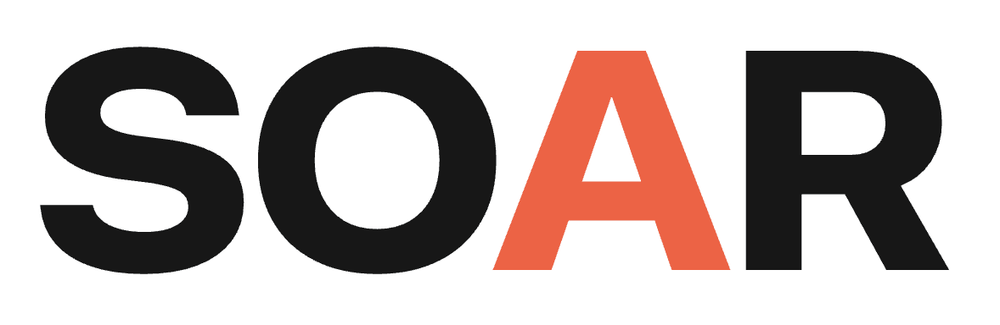
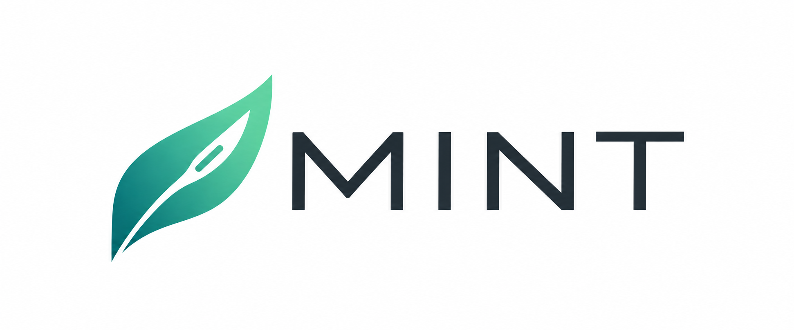

Use existing models

Surgical Objective Analysis and Review
SOAR helps surgeons get more value from their surgical videos by using AI to organize cases, surface important moments, and make review faster and more structured.
Explore surgical AI models, see what they produce on real surgical video, run them on your own cases, and build basic models of your own. No machine-learning background required.
What can surgical AI help with?
These models are research tools. They are designed to support surgeons' judgment, not replace it.
Model Suite
The current demo primarily showcases models developed for laparoscopic cholecystectomy. SurgAI Forge is designed to expand to additional procedures over time.
Surgical phase / step recognition across a procedure.
Detection of intraoperative adverse events.
Detection and tracking of surgical instruments.
Estimation of disease severity from operative video.
Assessment of whether the critical view of safety has been achieved.
Estimation of broad surgical skill ratings.
Use existing models

SOAR helps surgeons get more value from their surgical videos by using AI to organize cases, surface important moments, and make review faster and more structured.
Adapt and build

Run, adapt, or train models without writing code. MINT is a no-code desktop tool that runs locally on your computer.
Access
SurgAI Forge uses a request-based access process. SOAR, MINT, models, and labels go through one intake; SurgVision+500 has its own.
One request covers, as applicable